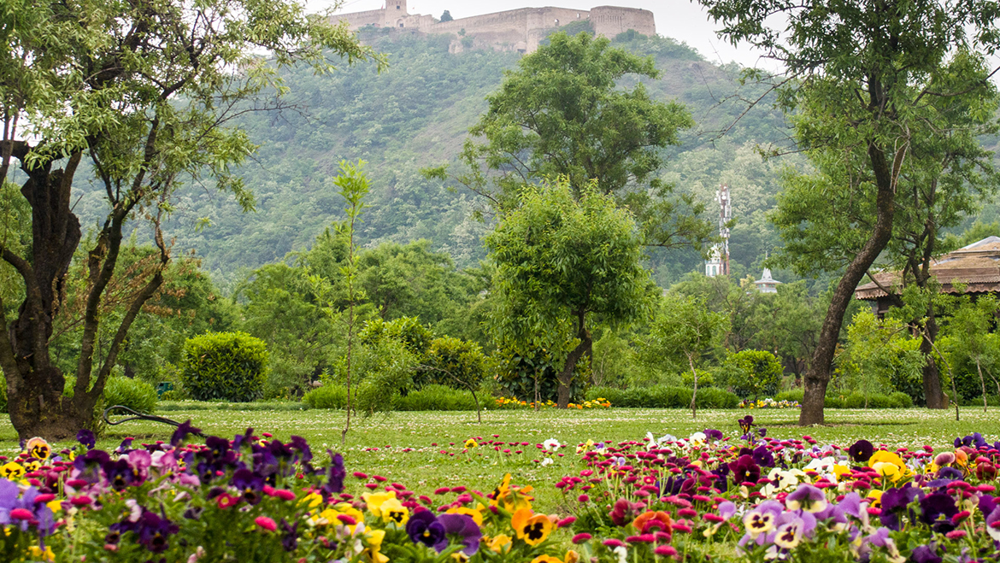

The early bloom of flowers on Almond trees in the sprawling historic Badamwari garden in Shahr-e-Khaas has become a source of attraction for nature lovers and tourists, alike. Situated on foothills of Koh-e-Maran, the 300 kanals garden was dotted with trees, flowers and cascades providing a soothing experience to the visitors. Historians maintain there was no record to suggest who laid the garden but they say it existed even before the rule of Sultan Zain-ul-Abidin in the 14th century. A well covered dome in the garden is named after an Afghan ruler, Warris Shah. The bloom on the Almond trees heralded the spring. the garden was revived and formally thrown open for public in 2008
